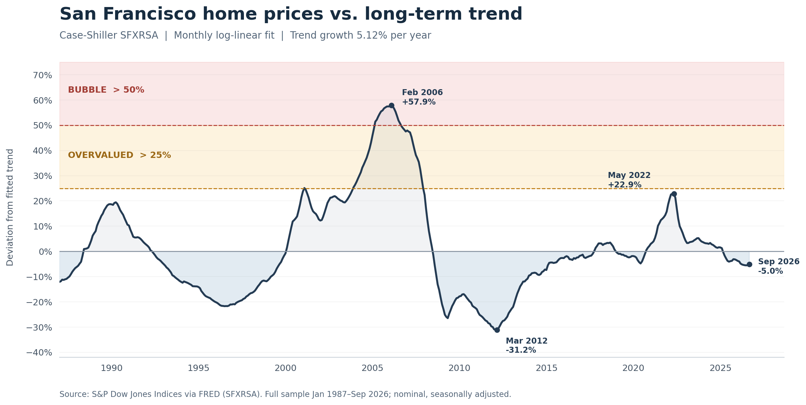
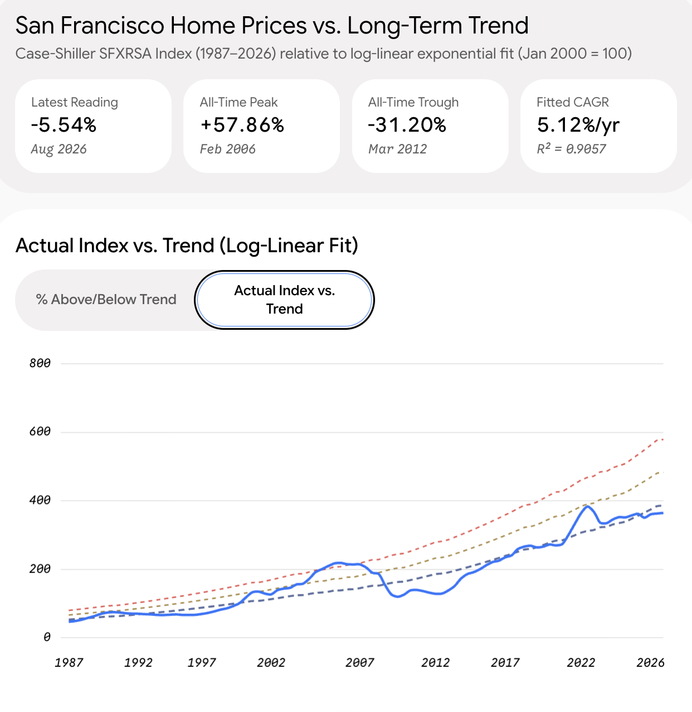
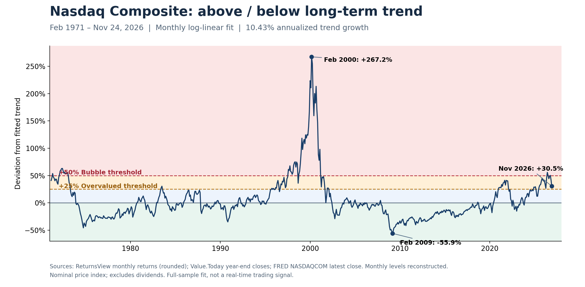
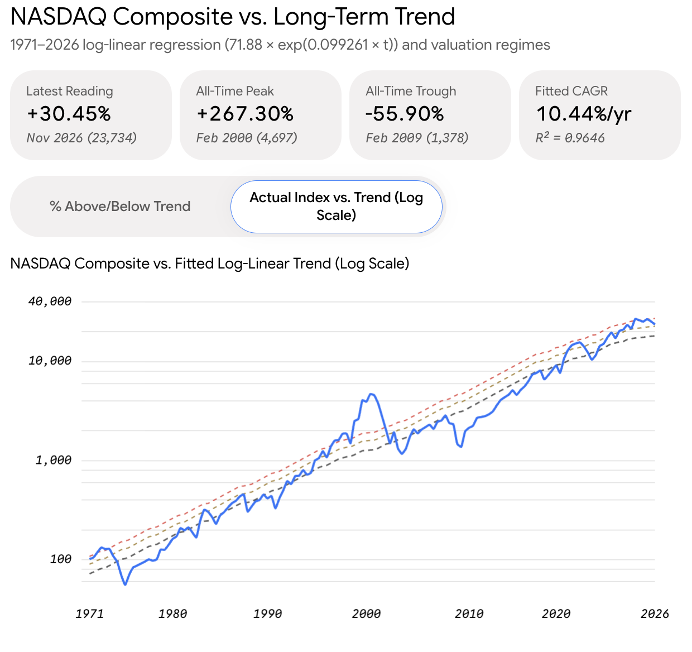

In finance, there is an uncomfortable truth that rarely makes it into the textbooks: an investment does not have to be a delusion to suffer a catastrophic crash.
Why? Because markets are not just calculating machines; in the short term, they are arenas of crowd psychology and structural fragility. Even when an asset’s long-term trajectory is fundamentally sound, the presence of speculative, over-leveraged, and weak-handed participants introduces fragility into the system. Under the right stress, that fragility spreads from a reckless minority to the broader majority, triggering a full-blown crisis.
When the dust settles, everyone stares at the steep cliff on the chart and immediately reaches for the same lazy label: “It was a bubble.”
But a violent crash does not automatically prove a bubble existed—nor does it tell you how big the bubble actually was. More often than we admit, what we call a bubble is a crisis of fragility and panic wearing a bubble’s mask.
The Anatomy of a Mirage
To understand why sharp drawdowns mislead us, it helps to trace the actual chain of events behind most financial crises:
- Debt and the broader macroeconomic environment create fragility.
- Fragility supplies the fuel for panic.
- Panic produces a sharp, violent drop—often overshooting far below fair value.
- A sharp drop makes modest overvaluation (or even fair value) look like a massive bubble in hindsight.
Think about what creates the visual impression of a bubble bursting: the vertical plunge. If an asset runs 30% ahead of its long-term trend and simply goes sideways for a few years while fundamentals catch up, nobody calls it a bubble—they just call it a dull stretch. It is the violence of a panic-driven sell-off, fueled by leverage, tightening financial conditions, and a sudden collapse of trust, that convinces observers the prior prices were pure fantasy.
A Practical Framework for Defining a Bubble
If "bubble" has become a catch-all buzzword for anything that drops sharply, how should we measure it? A disciplined approach starts with fitting a long-term trendline to an asset’s history and measuring how far prices deviate from it:
- Anchor to the Long-Term Trendline: Look at an asset’s multi-decade trajectory—ideally accounting for where fundamentals are heading in the future. If prices run roughly +25% above their long-term trend, it is fair to call the asset overvalued. Once they stretch +50% or more above trend, bubble territory begins.
- Distinguish Degree and Duration: Not all bubbles are created equal. Briefly crossing +50% above trend is a very different animal from detaching +250% into outer space. And if the long-term trend catches up to justify prior highs within a reasonable timeframe, the underlying asset wasn't broken—it was merely ahead of itself.
- The Epistemic Catch: A full-sample trendline is easy to draw in hindsight, but impossible to know with certainty in real time. Because true trend growth depends on the future, you can never prove a bubble today; you can only estimate the odds.
- Evaluate Instruments Individually: Never paint an entire economy with a single brush. One sector or stock can be a genuine bubble while another is fairly valued—yet panic can still drag them down together.
When we actually run the numbers on two of the most famous market episodes of the last 40 years—housing and tech—the data tells a far more nuanced story than the headlines.
Testing the Framework: What the Charts Actually Show
1. Housing: A Mild Bubble, a Massive Panic, and a False Alarm
Take San Francisco home prices (Case-Shiller SFXRSA, nominal, seasonally adjusted) from 1987 through September 2026. Over nearly four decades, prices have compounded along a remarkably steady log-linear trend of 5.12% per year (R² = 0.91).

San Francisco home prices (Case-Shiller SFXRSA, Jan 1987–Sep 2026) measured as percentage deviation from a 5.12% annualized log-linear trend. Note the mild bubble peak in Feb 2006 (+57.9%), the leverage-fueled panic trough in Mar 2012 (-31.2%), and the May 2022 "false alarm" (+22.9%) that cooled gently to -5.0% by Sep 2026. Source: S&P Dow Jones Indices via FRED.
Now look closely at the deviations from that trend:
- February 2006 Peak (+57.9%): Let’s be intellectually honest—under our own >50% rule, San Francisco housing did cross into bubble territory in 2006. Prices genuinely got ahead of their long-term trajectory.
- March 2012 Trough (-31.2%): Yet look at what followed. A +57.9% overshoot is mild compared to historic manias; without systemic leverage, years of flat prices could have quietly let the 5.12% annual trend catch up. Instead, toxic mortgage debt and fragile financial institutions turned a moderate housing overshoot into a full-scale panic, crushing prices all the way down to -31.2% below trend. The true mega-bubble of 2007 was the over-leveraged financial architecture stacked on top of those homes. Once the panic cleared, residential housing climbed right back onto its long-term trajectory.
- May 2022 Peak (+22.9%) to September 2026 (-5.0%): Even more revealing is the recent cycle. In 2022, commentators screamed that we were living through "Housing Bubble 2.0." Yet relative to its 40-year trend, San Francisco peaked at +22.9%—never even crossing the +25% overvalued threshold! By September 2026, it had cooled gently to -5.0% below trend. No crash, no collapse—just a market breathing around its long-term line.

Plotting the actual Case-Shiller SFXRSA index directly against its 5.12% compounding trend (R² = 0.91, Jan 2000 = 100) puts 2008 in perspective: once the debt-driven panic passed, residential prices steadily rejoined their multi-decade growth curve.
2. The Nasdaq: True Mania, Pure Panic, and Macro Repricing
Now apply the exact same model to the Nasdaq Composite from February 1971 to November 2026. Across 55 years, the index has compounded along an astonishingly tight log-linear trend of 10.43% per year (R² = 0.96).

Nasdaq Composite percentage deviation from its 10.43% annualized log-linear trend (Feb 1971–Nov 24, 2026). The chart cleanly separates a true structural bubble (Feb 2000 at +267.2%), pure systemic panic without a prior bubble (Feb 2009 at -55.9%), and a macro rate-hike repricing (2022). Sources: ReturnsView, Value.Today, FRED (NASDAQCOM).
The deviation chart separates three completely different phenomena with surgical clarity:
- February 2000 (+267.2% above trend) — A True Structural Bubble: This is what an actual mania looks like. Capital flooded into companies with no viable futures, and even legitimate giants like Cisco detached so violently from reality that they were scarred for decades. At +267.2% above trend—more than five times our bubble threshold—the dot-com peak wasn't merely expensive; it was unhinged.
- February 2009 (-55.9% below trend) — Pure Panic Without a Bubble: Here is the smoking gun for our thesis. Entering 2008, the Nasdaq was not in a bubble. Between 2004 and 2007, it traded almost dead-on its long-term trendline (hovering near 0%). Yet when the 2008 financial crisis erupted, systemic fragility and herd panic dragged a fairly valued tech index all the way down to -55.9% below trend. You do not need a bubble to suffer a 50%+ wipeout; you only need leverage and fear.
- 2022 (From Roughly +40% Down to -15%) — Macro Tightening in an Overvalued Market: Notice the smaller, sharper drawdown just a few years ago. Late-2021 tech was overvalued—never crossing the +50% bubble threshold—yet an inflation shock and aggressive interest rate hikes slammed the Nasdaq cleanly below trend in a single year. It felt brutal, and plenty of pundits called it a bubble popping. In reality, it was a macroeconomic repricing, and the index quickly climbed back onto its compounding path.
Herd Psychology and the Merchants of Panic
In the long run, fundamentals and compounding trends (5.1% for SF housing, 10.4% for the Nasdaq) write the story. In the short run, however, finance is pure herd psychology: the price is whatever the crowd can be convinced to believe.
This creates a lucrative opening for professional pessimists and panic-peddlers. Figures like Michael Burry built legendary reputations by betting on collapse and amplifying public fear. When prominent voices convince enough market participants that a crash is inevitable—and there is enough fragility in the economy to rattle nerves—the prophecy becomes self-fulfilling in the short term.
They don't have to be right about the 20-year trend to make a fortune. They only have to trigger—or ride—a 2-year panic that pushes an asset from +30% down to -30%.
The AI Debate in Late 2026: Overvalued, Not 2000—But Facing a 2022-Style Storm (Or Worse)
Today, the exact same playbook is being run against Artificial Intelligence. The usual suspects are ringing alarm bells, insisting that AI is dot-com 2.0.
What does our Nasdaq trend chart actually say as of November 2026?
At an index level of 23,734, the Nasdaq sits +30.5% above its 55-year log-linear trend (after briefly brushing the +50% bubble line earlier in the cycle).

The Nasdaq Composite plotted on a log scale against its 55-year trend (10.44% CAGR, R² = 0.96). At 23,734 in November 2026 (+30.5% above trend), today's AI-led market sits firmly in overvalued territory—stretched enough to be vulnerable to a macro shock, yet worlds apart from the +267.3% dot-com mania of 2000.
That single number cuts through both extremes of the debate:
- It is not 2000. Comparing +30.5% today to +267.2% in February 2000 is analytically absurd. Looking at the investments being made by Nvidia and the major hyperscalers, this isn't empty dot-com vaporware—it is backed by fortress balance sheets, massive real cash flows, and genuine technological transformation.
- It is overvalued. Crossing above +25% puts the market squarely in the Overvalued regime.
And yet, a violent crash is still entirely possible.
Why? Because even if AI turns out to be the greatest invention and best long-term investment of our era, an overvalued market colliding with an ugly macroeconomic storm is an open invitation for panic.
Where the Real Risk Lives: Iran, Rate Hikes, and an Extreme Fiscal Deficit
The real threat to markets right now isn't that AI is a technological mirage. The real threat is macroeconomic fragility—an environment bearing an eerie resemblance to 2022, with every reason to fear it could turn out even worse.
Look at the forces converging at the exact same moment:
- The Iran Conflict and an Energy-Driven Inflation Shock: Just as the war in Ukraine helped ignite a commodity and inflation surge in 2022, the conflict with Iran has rattled global energy markets, disrupted Gulf shipping, and pushed up fuel, freight, and food costs across the board. Inflation is no longer cooling quietly—it is re-accelerating.
- Significant Rate Hikes Ahead: With price pressures flaring back up, the Federal Reserve has already returned to tightening, and markets are bracing for significant additional interest rate hikes ahead. Higher discount rates punish long-duration growth stocks mechanically—just as they did when the Nasdaq dropped from +40% to -15% in 2022.
- Why This Could Be Worse Than 2022 — The Extreme Fiscal Deficit: Here is the critical difference. In 2022, the economy still had post-pandemic household cushions and far lower debt-servicing stress. Today, we are walking into a fresh wave of rate hikes on top of an extreme fiscal deficit. Running massive deficits alongside war spending and aggressive monetary tightening puts bond markets under severe strain, pushes long-term yields relentlessly higher, and leaves policymakers with almost no room to maneuver if something breaks.
- Hollowing Out the Real Economy: Layer disruptive tariffs and policy choices—like cuts to Medicare and social safety nets—on top of surging energy and grocery bills, and lower-income households are taking blow after blow. When economic governance consistently enriches the top while squeezing the bottom, the real economy grows brittle from underneath.
That is where the actual bubble lies: not in AI infrastructure, but in unsustainable fiscal deficits, geopolitical recklessness, and top-heavy economic policies that invite a macroeconomic accident.
If this combination—Iran, significant rate hikes, and an extreme fiscal deficit—tips the real economy into a downturn or sparks a bond-market panic, an overvalued Nasdaq won't politely glide down from +30.5% to 0%. Just as 2022 slammed tech below trend, and just as 2008–2009 drove a fairly valued Nasdaq to -55.9% and San Francisco housing to -31.2%, panic will force a sharp, brutal undershoot.
And when that cliff appears on the chart, the panic-peddlers will take a victory lap and shout: "See? We told you AI was a bubble!"
They will look vindicated in the short term. But mistaking a macro-driven, 2022-style (or worse) shock in an overvalued market for a dot-com delusion is still the wrong diagnosis.
Separating Fear from Fiction
Markets will always have panics. Debt, fiscal recklessness, wars, rate shocks, and herd mentality guarantee that violent drawdowns—and deep undershoots below trend—will keep happening.
The job of a clear-eyed observer isn't to pretend valuations never get stretched, nor to deny that crashes happen. It is to keep our categories straight:
- True Structural Bubbles (like the Nasdaq at +267% in 2000), where prices detach completely from reality and take a generation to heal.
- Moderate Overshoots Amplified by Fragility (like San Francisco housing at +58% in 2006, smashed down to -31% by toxic debt).
- Macro-Driven Repricings and Pure Panics (like the Nasdaq knocked below trend by rate hikes in 2022, or dragged from 0% to -56% in 2008–2009 by a crisis elsewhere).
The next time markets plunge, resist the urge to reach straight for the word bubble. Look at the long-term trend and ask what is actually breaking: the asset, the valuation, or the macroeconomy underneath it. In real time, we can never know with certainty—even this essay's reading of AI is a bet on a future trend no one can see. But weighing the odds clearly beats mistaking every panic for a delusion.
Comments